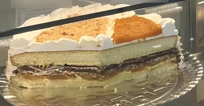
Bolo Marta Rocha
O mais famoso da casa
Feito com a receita que atravessa gerações. Camadas equilibradas, recheios marcantes e um sabor que já virou tradição na cidade.
Bolos confeitados e tortas por encomenda. Desde 1985, em Joinville.
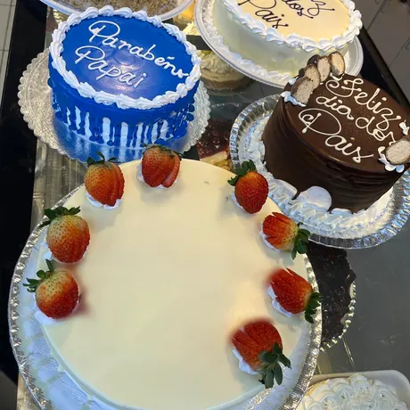
Prévia ilustrativa. Letra e desenho são combinados com a confeitaria.
Aniversário, primeira comunhão, Dia dos Pais. A Mafra faz bolos personalizados para os momentos especiais. Estes saíram da confeitaria.
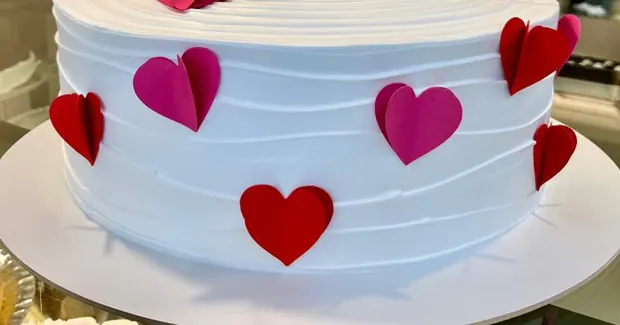
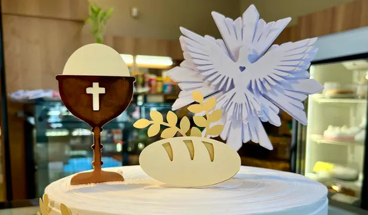
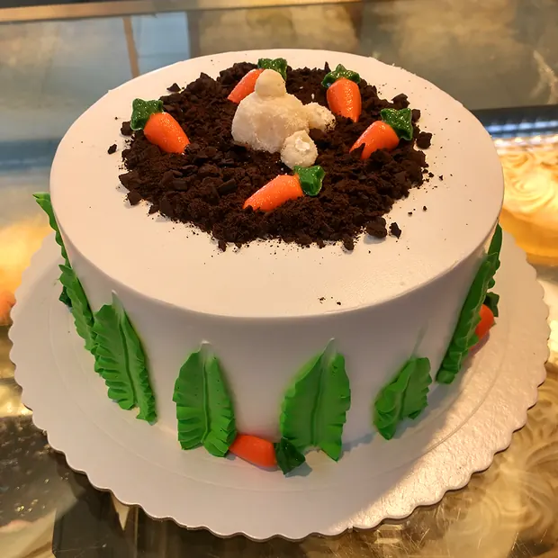

O mais famoso da casa
Feito com a receita que atravessa gerações. Camadas equilibradas, recheios marcantes e um sabor que já virou tradição na cidade.
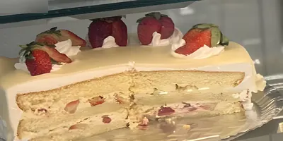
Para aniversário e encontro de família
Massa fofinha, recheio leve e morangos frescos selecionados. Suavidade e frescor em qualquer ocasião.
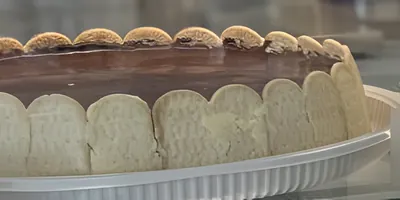
Uma das campeãs de vendas
Creme suave, biscoitos amanteigados e cobertura de chocolate. Presença garantida em festas, e no dia a dia também.
Toque na etiqueta de um bolo e peça pelo WhatsApp.
Arraste para ver a vitrine inteira.
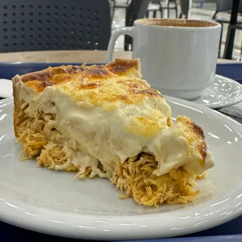
O empadão artesanal da Mafra é receita de família. Entre as tortas, a de ricota com brócolis é a queridinha do bairro.
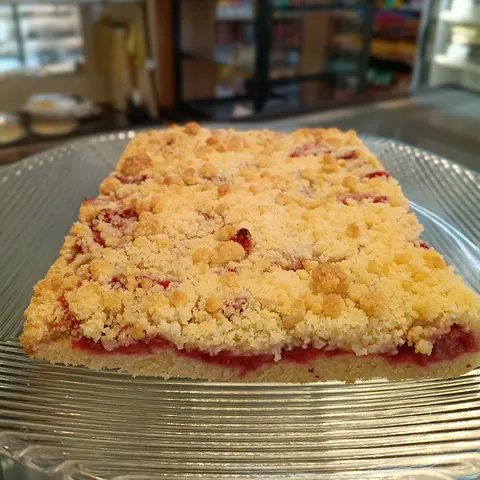
Doces caseiros com sabor de infância e de receita de família, como cucas, chineques e brigadeiros.

Coxinhas, risoles, bolinhas de queijo e muito mais, sempre fresquinhos.
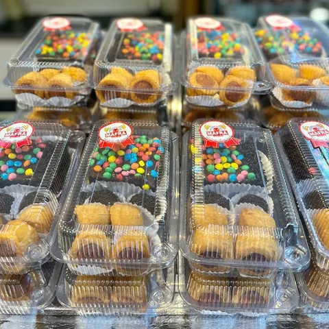
Docinhos em caixinhas com o selo da casa.
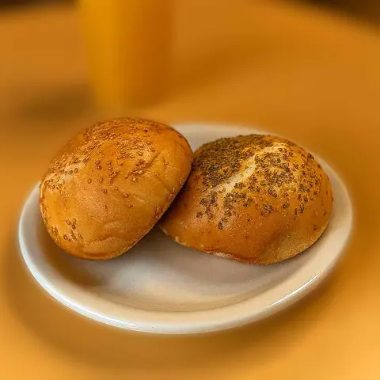
Pães artesanais de fermentação natural, coloniais e integrais, fresquinhos.
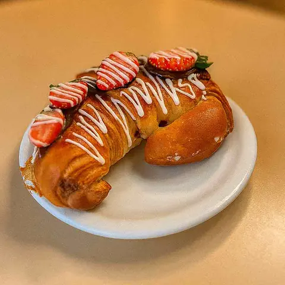
Um café da manhã completo, com cheirinho de casa de vó.
Em 2025, a Mafra abriu a Casa de Mafra: café da manhã servido com calma, empadões, doces e pães saindo do forno com o mesmo cuidado de sempre.
Av. Alm. Jaceguay, 2935, Costa e Silva
Anexo à Loja Havan, Joinville
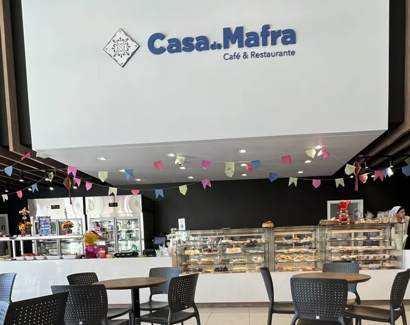
A primeira fornada saiu em 1985, no coração do Boehmerwald. Em 2025 a Mafra completou 40 anos, reconhecida como a confeitaria mais tradicional da zona sul de Joinville.

O bolo ou a torta, a ocasião, o que vai escrito e para quantas pessoas.
Sabor, tamanho e data, direto com a equipe da Mafra.
Retire numa das lojas. A entrega em Joinville é sob consulta.